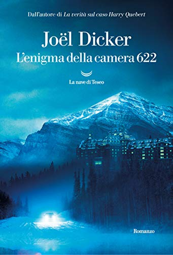

Site Contents
L'enigma della camera 622
L’enigma della camera 622, romanzo pubblicato l’11 giugno 2020, è un thriller narrato con uno stile semplice, coinvolgente e intrigante.
Il libro si apre con una dedica a Bernard de Fallois, storico editore dello scrittore da poco deceduto. Probabilmente senza la morte di quest’ultimo il romanzo non sarebbe mai nato perchè è proprio intorno al ricordo di Bernard che Joël Dicker costruisce la struttura e la trama del libro.
Incipit
|
Erano le sei e mezzo del mattino. Il Palace de Verbier era immerso nell’oscurità. Fuori era ancora buio pesto e nevicava copiosamente.
Le porte dell’ascensore di servizio si aprirono al sesto piano.
Apparve un dipendente dell’albergo, con un vassoio della colazione, che si diresse verso la camera 622.
(A destra la copertina del libro)
|

|
Trama
Per staccare la spina da una relazione finita male per colpa sua e per rielaborare il lutto seguito alla morte del suo editore – Bernard De Fallois – che gli ha provocato un blocco d’ispirazione, Joël – da tutti conosciuto come lo Scrittore – decide di prendersi qualche giorno di relax a Verbier, rinomata località alpina. Appena arrivato, con la curiosità tipica dello scrittore abituato ad osservare certi particolari, Joël nota subito che la numerazione delle camere del sesto piano del suo hotel – il Palace de Verbier – ha qualcosa di strano: dalla 621 si passa alla 621 Bis e poi alla 623. E la 622? Lo Scrittore, però, non è in vena di inventare storie e usare la fantasia, quindi non dà particolare peso a questo “mistero”.
Al contrario, l’inquilina della stanza accanto alla sua, l’avvenente e curiosa Scarlett, lo nota e, affascinata dall’idea di avere a disposizione un mistero e uno scrittore, comincia ad indagare come un vero segugio, fino a risvegliare, suo malgrado, l’interesse di Joël. Ben presto viene fuori che, anni prima, proprio nella camera 622 si era consumato un omicidio il cui colpevole non era mai stato trovato. C’è qualcosa di più ghiotto di un cold case per due curiosi in vacanza? La strana coppia comincia ad indagare e, seguendo le loro tracce, anche noi ci immergiamo nel mondo delle banche svizzere, del lusso, degli intrighi creati dal pericoloso connubio potere-denaro.
Tutto ruota intorno alla nomina a presidente di una delle più importanti banche private di Ginevra, la banca Ebezner. La regola storica prevederebbe che “solo un Ebezner può dirigere la banca Ebezner“, quindi il titolo sarebbe spettato di diritto a Macaire Ebezner, unico figlio dell’ex presidente Abel Ebezner, se non fosse che quindici anni prima, per un motivo mai spiegato, Macaire aveva venduto le sue azioni ad un losco e misterioso magnate dell’Est, Sinior Tarnogol. Un estraneo era quindi entrato ai vertici della banca per colpa sua, pertanto un anno prima, in punto di morte, Abel ancora presidente aveva cambiato le regole del gioco impedendo di fatto al figlio la successione automatica.
Questo, al momento dell’elezione del presidente, crea non poche diatribe interne ai vertici, giacché sono in tanti ad ambire al prestigioso ruolo di presidente. C’è Macaire, amareggiato dalla decisione paterna e disposto a tutto pur di accaparrarsi ciò che ritiene spettargli di diritto; ci sono i suoi cugini, da sempre messi da parte come il ramo minoritario della famiglia, che insospettabilmente hanno mire di rivalsa; c’è Lev Levovitch, un giovane banchiere, anche lui esterno alla banca ma spalleggiato da Tarnogol, che nel tempo ha dimostrato una grande intelligenza, nonché tutte le capacità necessarie a guidare una banca florida e prestigiosa come la Ebezner. Nel bel mezzo di questo bailamme c’è, immancabilmente, una donna, la bella Anastasia, moglie di Macaire… anche lei avrà un ruolo tutt’altro che secondario nella vicenda. Tutto si risolverà, in un modo o nell’altro, durante il Gran Weekend della banca che si svolgerà proprio al Palace hotel.
A partire da questo punto, con dovizia di particolari, trame e sottotrame, Dicker ci guida sapientemente attraverso i giorni precedenti il Gran weekend che, già ce lo anticipa, culminerà con un omicidio. L’autore lascia che a traghettarci attraverso questo guazzabuglio di storie e controstorie siano proprio le indagini del suo omonimo d’inchiostro – il JoJoëll in vacanza – e della sua curiosa e propositiva compagna inglese. Una trovata singolare, ma efficace alla buona rendita della trama.
Con arguzia, attraverso i riferimenti all’editore scomparso – quel Bernard De Fallois di cui si diceva all’inizio, realmente esistito e reale editore e amico di Dicker – l’autore ci porta a riflettere sull’importanza della scrittura come mezzo per combattere la solitudine, come voglia inesauribile di scrivere, di creare storie, di immergersi in altri mondi con sempre nuovi compagni di viaggio.
L’enigma della camera 622 è un thriller piacevole che, nonostante la mole, si fa leggere agevolmente. Pagina dopo pagina, si finisce per affezionarsi alla storia e al destino dei personaggi che, grazie all’ottima caratterizzazione, sembrano davvero reali. Un thriller di ambientazione alpina in cui sarà piacevole immergersi durante le calde giornate di quest’estate anomala.
Dedica all'autore
"Al mio editore, amico e maestro Bernard de Fallois (1926-2018).
Che tutti gli scrittori del mondo possano conoscere un giorno un editore così eccezionale"
Cari lettori,
prima che iniziate la lettura di questo romanzo voglio condividere con voi un pensiero commosso per il mio editore, Bernard de Fallois, che ci ha lasciato nel gennaio 2018.
Bernard de Fallois aveva un eccezionale senso della letteratura.
Questo libro gli deve molto. Così come i miei precedenti romanzi.
Buona lettura.
(A destra Dicker con Bernard de Fallois)
|

|
Torna all'inizio